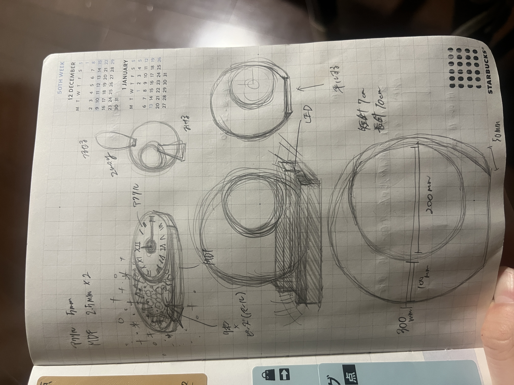
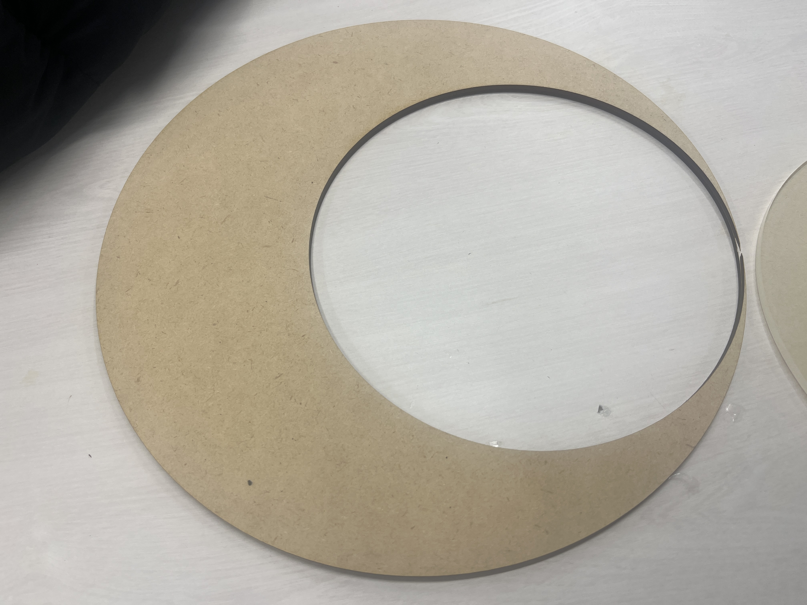
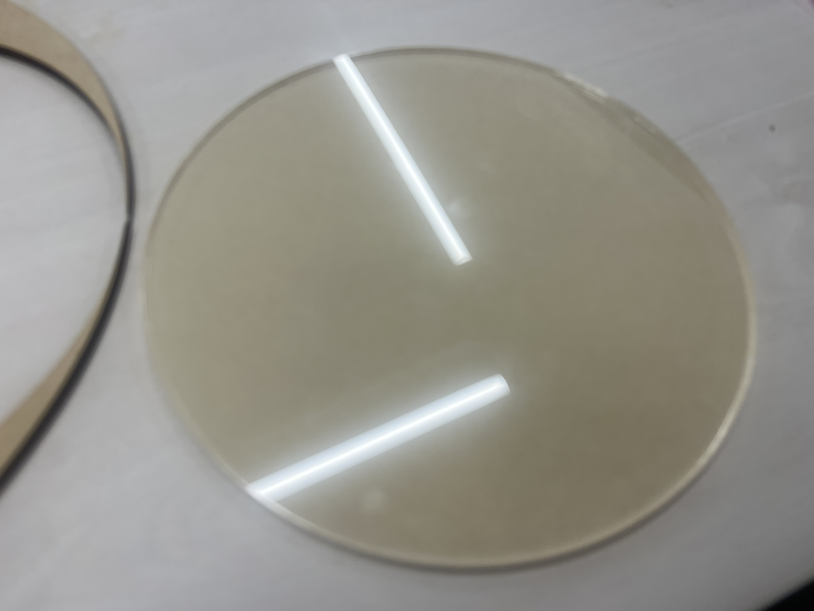
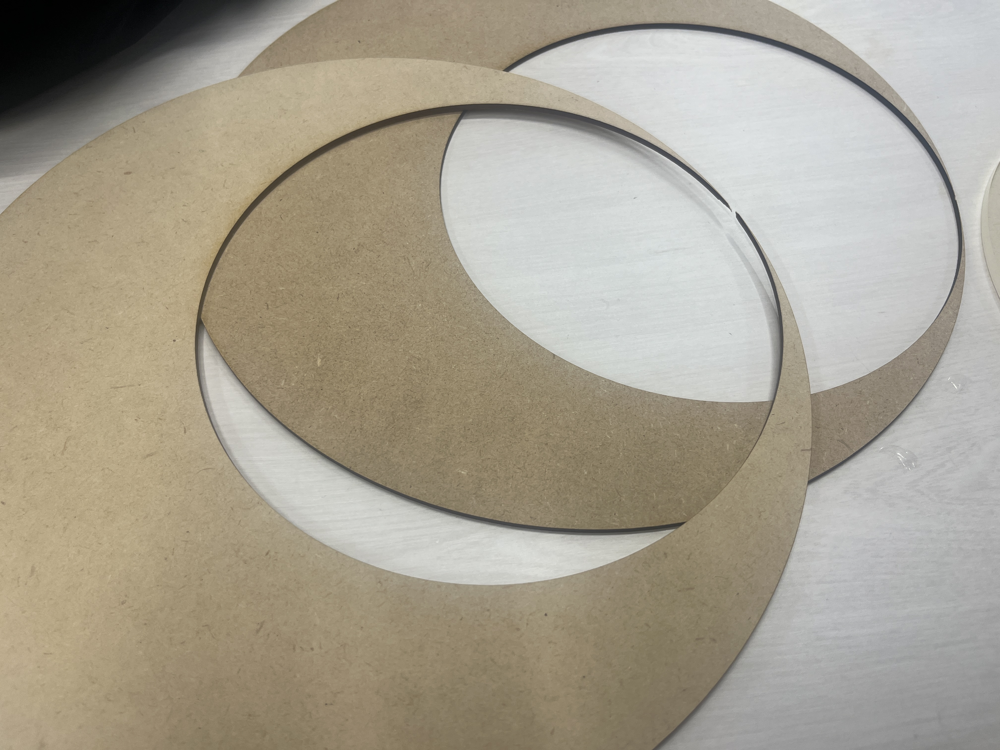
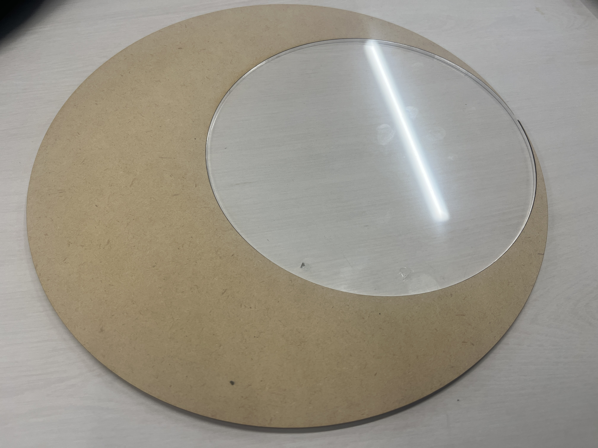
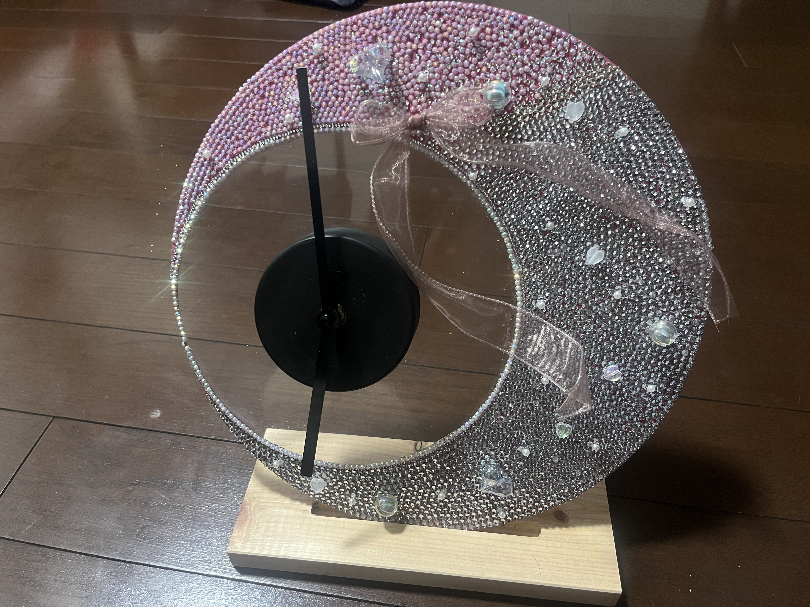

テーマ：自分が情熱を注げられるもの
🎀Youtube🎀
Youtube動画はこちら👼
🎀アイディアデザイン🎀

🎀レーザーカッター🎀




🎀完成した作品🎀

🎀感想🎀
なかなか計画通りに制作することができなくて、ギリギリの完成となってしまって、100％自分の思うような作品は完成できなかったけど、なんとか完成できて良かったです。
反省点としては、DIY用の時計が奥行きがあっとのにもかかわらずアクリル板の上に直接くっつけてしまったので、時計の部分だけ浮いて見えてしまったところです。
また、完成形を横から見たら、薄さ5mmで作ったのもあり「薄い！！」っていうところは改善できたのかなと思っています。
逆に良かったところは、自分が好きなようにキラキラでデコれたところや、レーザーカッターでは想像通り上手く作れたところです。
自分が情熱を注げられるものとして、「キラキラなもの」があったので最終課題で楽しく飽きずに作れて良かったです😌✨
動画編集も作っている過程が楽しかったです💖